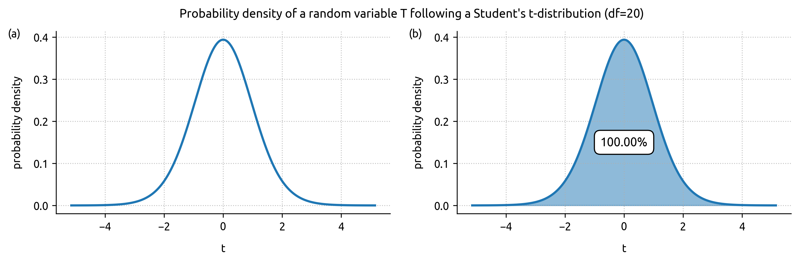
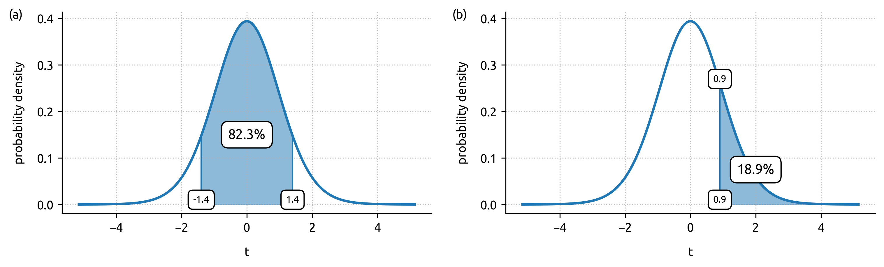
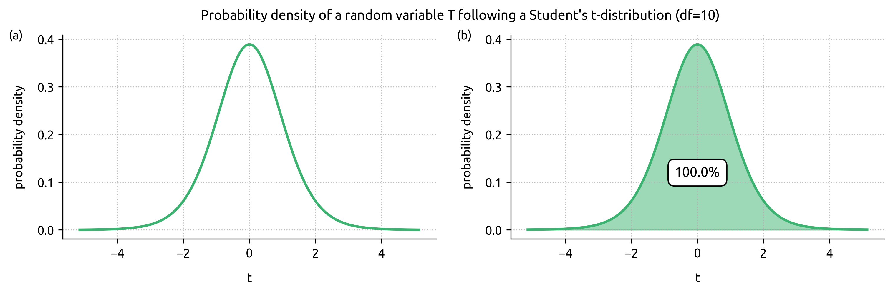
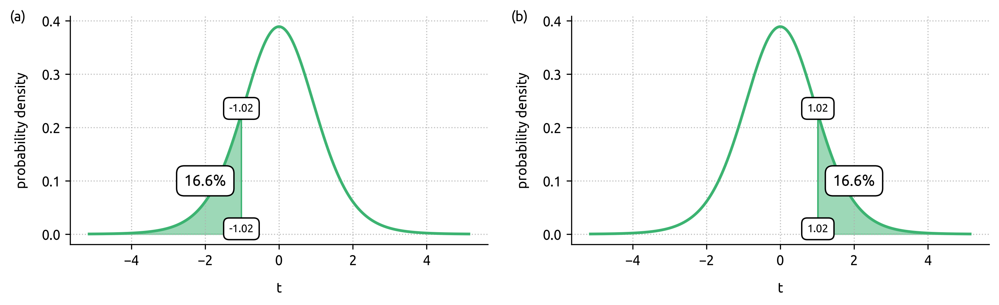
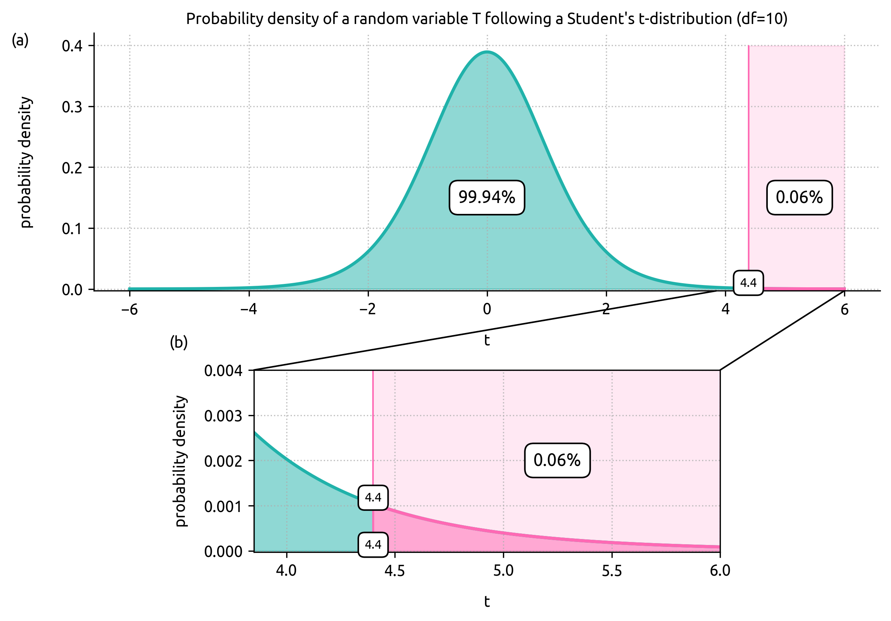
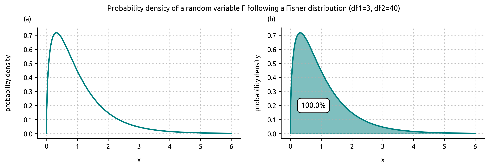
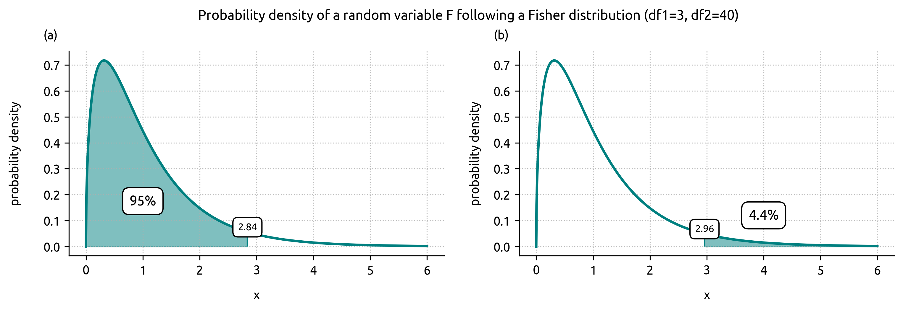
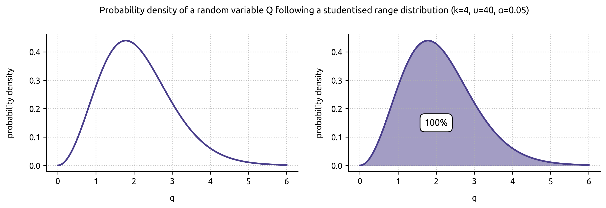
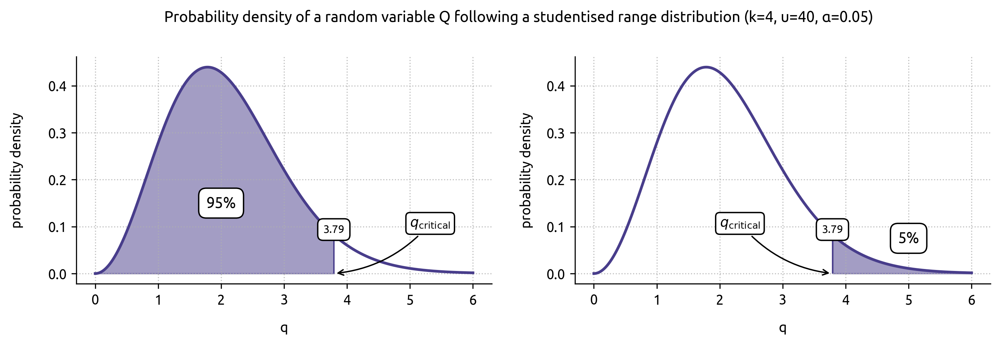
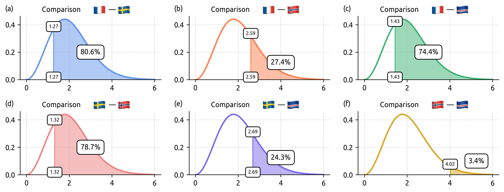

In the examples on the previous pages, we calculated p-values “ directly ”, that is, as simple conditional probabilities. This was possible because we knew the distribution of the random variable of interest under the null hypothesis: we knew what to expect when tossing a coin assumed to be fair 20 times, just as we knew what to expect when observing the height of a tree assumed to be an oak.
In experimental science, and in biology in particular, this situation is rare: when testing a hypothesis, there is generally no probability distribution directly associated with the variable being studied. This is where statistical tests come in: they allow us to construct a random variable representative of the situation of interest, and then calculate the p-value exactly as we did previously.
Statistics: summarising a comparison in a single number
Another tale about height
On Tuesday 30 June 2026, during the football World Cup, France played Sweden in the round of 32 in New York. Let’s imagine we want to know whether the players in the Swedish team are, on average, taller than those in the French team. Our null hypothesis $H_0$, the default state of the world, would then be to assume that there is no difference in average height between the players in the French team and those in the Swedish team: the two averages would be broadly the same. To find out whether the Swedes are taller than the French, all we would need to do is measure the average height of both teams, then observe the difference between these averages (this is our random variable, i.e. the quantity of interest in this experiment), and finally calculate the associated p-value: the probability of observing a difference at least as extreme as the one observed, assuming $H_0$ is true (the averages are identical). Easy, right?
A problem then arises: how do we translate “ $H_0$ is true ” mathematically, in other words how do we express the fact that the two teams have the same average height? What should we expect if the two teams really do have the same average height? And most importantly: what is the probability distribution of the random variable representing the difference in average heights?
Let $\subse{\bar{x}}$ denote the average height (in cm) of the 11 Swedish starting players and $\subfr{\bar{x}}$ the average height (in cm) of the 11 French starting players. In our experiment, since we are interested in the difference between the means, we can introduce the random variable $D \coloneqq \subse{\bar{x}} - \subfr{\bar{x}}$. If the means were strictly identical, we would have $D = 0$. But if we obtain $D = 0.3$, this means that the observed difference between the means is 0.3 cm in favour of the Swedes. Are the Swedish players really taller than the French ones, then? At what point can we conclude something? What is the threshold difference that would allow us to switch from $H_0$ (both teams are the same height) to $H_1$ (the Swedish players are taller than the French players)? Is a difference of 0.2 cm enough to declare the Swedes taller? Or do we need at least 5 cm?
In reality, the problem we are trying to solve is whether the observed value of $D$ ($D_{\text{observed}}$) has any real meaning: is this observed difference meaningful or simply negligible? In statistics, we say we are trying to find out whether the difference is significant, that is, whether it is large enough not to be due to simple chance.
In fact, since calculating the p-value is objective but the conclusion we draw from it is subjective (the choice of the 5% threshold), we could just as well construct a new, alternative theory, also based on a subjective threshold. I could very well decide (before carrying out the experiment): “ I consider a difference of at least 2 cm to be significant, and it will allow me to conclude that the Swedes are taller, should that be the case ” (we switch from $H_0$ to $H_1$). Conversely, if I observe a difference of less than 2 cm, I will consider this negligible, and I will be entitled to conclude that the difference is not significant: the Swedes are not distinctly taller than the French (non-rejection of $H_0$).
The conclusions we draw will be “ true ” within this theory. And we could construct any alternative theory we like: for example, deciding that the difference must be greater than the radius of a football (~11 cm) to switch from $H_0$ to $H_1$. If we observe an 8 cm gap, we would then be entitled to consider that this difference is not significant — within our theory. These theories are neither false nor true: they are simply straightforward rules we set ourselves in order to draw conclusions. If experimental science worked this way, everyone would choose whichever threshold suited them, and nothing would make sense any more. To settle once and for all whether the Swedish players are taller than the French, we need to use a theory recognised by the entire academic world... the theory of the p-value.
To calculate the p-value properly, we need to know the probability distribution of the random variable representing the situation under study (the difference between the means). Let’s start by taking a closer look at the data:
The France team stands at an average height of 183.2 cm, while the Sweden team stands at an average height of 185.6 cm. The Swedish players are therefore taller than the French players. The question to ask is whether this difference is significant? Do these 2.4 cm of difference suffice to conclude that the Swedish footballers are genuinely taller than the French ones?
Let’s go back to our random variable $D \coloneqq \subse{\bar{x}} - \subfr{\bar{x}}$. Here, we therefore have $D_{\text{observed}} = 185.6 - 183.2 = 2.4$. If we take 2 cm as the threshold for switching from $H_0$ to $H_1$, the difference is significant since 2.4 > 2, but if we take the radius of the football as the threshold, the difference is no longer significant since 2.4 < 11. Let’s be more rigorous and use conventional methods.
To test whether this difference is significant using the theory of the p-value, we need to create a random variable $X$ that represents the studied situation (the mean difference in heights) and whose probability distribution is known. Then, all we need to do is look at the value that $X$ takes in our experiment with our data and finally calculate the probability of observing such a value — or an even larger one — if the heights of the two teams were genuinely identical ($H_0$ true). This amounts to calculating: $\mathbb{P}(X \geq X_{\text{observed}} \mid H_0 \text{ true})$, which is the definition of the p-value.
Student's t-test
Let’s go back to our random variable $D$, which we rename $T$: $$T = \subse{\bar{x}} - \subfr{\bar{x}}$$ Admittedly, $T$ does represent the situation under study, since it correctly characterises the difference between the means, but we do not know its probability distribution. It is therefore impossible to calculate a p-value.
Let’s now modify $T$ so that: $$T = \dfrac{\subse{\bar{x}} - \subfr{\bar{x}}}{s_p \cdot \sqrt{\dfrac{1}{\subse{n}} + \dfrac{1}{\subfr{n}}}}$$ where $\subse{n}$ is the number of players in the Sweden group, $\subfr{n}$ is the number of players in the France group, and $s_p$ is the pooled standard deviation of the two groups:
$$s_p = \sqrt{\dfrac{(\subse{n}-1) \cdot \subse{s}^2 + (\subfr{n}-1)\,\subfr{s}^2}{\subse{n} + \subfr{n} - 2}}$$
Unlike the simple difference between the means ($\subse{\bar{x}} - \subfr{\bar{x}}$), this new random variable $T$ has a valuable advantage: under $H_0$ (that is, if the two groups really do have the same mean), it can be shown that $T$ follows a Student’s t-distribution with parameter $\subse{n} + \subfr{n} - 2$. Technically, this parameter describes the degrees of freedom of the probability density, and here $T$ therefore follows a Student’s t-distribution with 11 + 11 - 2 = 20 degrees of freedom. So now we know what to expect when $H_0$ is true: we can therefore assess whether an observed result is consistent with our hypothesis, or whether it is extraordinary.
In other words, by dividing the difference between the means by an estimate of the natural variability of the data (via $s_p$), we transform a number whose distribution was unknown into a random variable whose distribution is perfectly known! The random variable we have just constructed is called the Student’s t-statistic. It is precisely this construction that will allow us to calculate our p-value using the usual methods.

Figure 1 shows the probability density of the random variable $T$ constructed above, when $H_0$ is true. To calculate the probability that $T$ falls within a given interval, knowing that the two teams have the same average height, all we need to do is evaluate the area under the curve of the density between the two limits under consideration (Figure 2).

So, if we assume that the two teams have the same average height, the probability of observing a value of $T$ between -1.4 and 1.4 (Figure 2a) is 82.3%: this means that, even if the two teams really were identical in height, it would be quite common to observe, simply through sampling randomness or chance, a difference like this one.
In our example with the French and Swedish players, we obtain: $$T_{\text{observed}} = \dfrac{185.6 - 183.2}{\sqrt{\dfrac{(11 -1) \cdot 7^2 + (11 -1) \cdot 5.4^2}{11 + 11 - 2}} \cdot \sqrt{\dfrac{1}{11} + \dfrac{1}{11}}} = 0.9$$
To calculate the p-value and conclude whether the 2.4 cm difference between the two teams is significant or not, all we need to do is apply the definition of the p-value and calculate $\mathbb{P}(T \geq 0.9 \mid H_0 \text{ true})$. Given that $T$ follows a Student’s t-distribution with 20 degrees of freedom under $H_0$ (when $H_0$ is true), we can evaluate this quantity directly using Figure 2b: $$\mathbb{P}(T \geq 0.9 \mid H_0 \text{ true}) = 0.189 \gt 0.05$$
Since 0.189 > 0.05 (18.9% > 5%), we have not gathered enough evidence to switch to $H_1$ and conclude that the Swedish players are taller than the French players. If the two teams had the same average height, we would have had an 18.9% chance of observing this result — or a result at least as extreme. The 5% threshold is not reached, and $H_0$ therefore cannot be rejected: the 2.4 cm difference in favour of the Sweden team is not significant. We cannot claim that the Blågult are taller than the Bleus.
A few notes
When we apply the reasoning above, we say we are carrying out a Student’s t-test, which amounts to calculating the value of the Student’s t statistic from the data, then evaluating the area under the associated density between the calculated value and +∞.
As we have seen throughout our journey, it is incorrect to claim that, given the data and the difference between the means, there is an 18.9% chance that the two teams really are the same height.
When carrying out a statistical test using specialised software, most scientists focus solely on the p-value; but the software also provides the value of the test statistic. It can sometimes be worth paying a little more attention to this, given that it is this statistic that condenses the data and allows the famous p-value to be calculated.
Finally, for the reasoning to be rigorously correct, and above all for the random variable $T$ to genuinely follow a Student’s t-distribution when $H_0$ is true, the distributions of the two groups being compared must be approximately normal, and their variances must be homogeneous (homoscedasticity), which I did check before applying this reasoning, but that’s another story...
Student’s t-test for paired samples
In the previous example, we carried out a Student’s t-test for independent samples, meaning that we compared the two means without taking into account any potential individual differences between players. Some French players are taller than some Swedish players, and vice versa, but overall the Sweden team is 2.4 cm taller (even though this difference is not significant). But now let’s imagine a different scenario: what if every Swedish player were exactly 2.4 cm taller than his French counterpart? On average, the gap between the two teams would still be 2.4 cm… but you can sense that this particular 2.4 cm is far more convincing than the first one, isn’t it? In this case, there is potentially no more individual randomness blurring the picture: the difference is the same everywhere, all the time.
When we want to make a comparison individual by individual (observation by observation) rather than overall — as in our scenario where each Swedish player is compared with his French counterpart — we can carry out a variant of the Student’s t-test known as the paired Student’s t-test. This requires two conditions: the same number of observations in each group, and the ability to form pairs that make sense (for example, a Swedish player and a French player playing in the same position, or measurements taken on the same person before and after a treatment).
Table 2 shows the pairs formed between the players of the two teams. For the sake of simplicity, we have assumed that the two teams had exactly the same formation (4-2-3-1), so that each player could be linked to another player sharing exactly the same position. In this way, each French player can be paired with his Swedish “ counterpart ”.
When carrying out a Student’s t-test for paired samples, we always need to look at the difference in height (or any other measurement) for each pair formed (Table 3). The dataset can now be represented using a single series of values. Unlike the t-test for independent samples in the previous section, here we have calculated the France − Sweden differences (rather than Sweden − France), but the order of the operation makes no difference: the Student’s t-distribution is symmetrical around 0. The calculations can be done either way round, and the results will be identical.
By pairing the players in this way, we find an average difference of -2.4 cm in favour of the French players (in fact, any pairing will give this same average). In other words, the French are shorter than the Swedes by 2.4 cm on average. This is exactly the same information as that obtained in the previous test, where we first calculated the average of the Swedish players ($\subse{\bar{x}}$) and subtracted the average of the French players ($\subfr{\bar{x}}$) from it.
Once the pairs have been created, the rest of the reasoning is identical to a t-test for independent samples, apart from the test statistic. For a paired Student’s t-test, the random variable used is: $$T = \sqrt{n} \cdot \dfrac{\bar{d}}{s_d}$$ where $n$ is the number of pairs created, $\bar{d}$ is the mean of the differences, and $s_d$ is the standard deviation of the differences.
Once again, it turns out that this random variable has a valuable advantage: when $H_0$ is true, $T$ follows a Student’s t-distribution with $n-1$ degrees of freedom. This means that we know what to expect if $H_0$ is true, and we can therefore decide whether an observed result is ordinary or extraordinary. In our example, since we have 11 pairs of players, $T$ then follows a Student’s t-distribution with 10 degrees of freedom (Figure 3).

In our example with the French and Swedish players paired together, we obtain: $$T_{\text{observed}} = \sqrt{11} \cdot \dfrac{-2.4}{7.8} = -1.02$$
To calculate the p-value and conclude whether the 2.4 cm difference between the two teams (paired samples) is significant or not, all we need to do is apply the definition of the p-value and calculate $\mathbb{P}(T \leq -1.02 \mid H_0 \text{ true})$. Since $T$ follows a Student’s t-distribution with 10 degrees of freedom under $H_0$ (that is, when $H_0$ is true), we can easily calculate this probability by directly evaluating the area under the associated density curve, between the bounds −∞ and -1.02. In this example, the observed test statistic ($T_{\text{observed}}$) is negative (T = -1.02). Obtaining “ a value at least as extreme ” therefore means looking at the left-hand side of the curve: indeed, the values at least as extreme as -1.02 are those that are even smaller (i.e. even more negative).

The area we are interested in gives $\mathbb{P}(T \leq -1.02 \mid H_0 \text{ true}) = 0.166$. Thus, in this experiment p = 0.166 (Figure 4a).
Since 0.166 > 0.05 (16.6% > 5%), we have not gathered enough evidence to switch to $H_1$ and conclude that the Swedish players are taller than the French players (paired samples). If the two teams had the same average height, we would have had a 16.6% chance of observing this result — or a result at least as extreme. The 5% threshold is not crossed, and $H_0$ therefore cannot be rejected: the 2.4 cm difference in favour of the Sweden team is not significant. We cannot claim that the Blågult are taller than the Bleus, even when taking individual differences into account.
It is worth noting here the symmetry of the Student’s t-distribution (regardless of the number of degrees of freedom): if we had calculated the Sweden − France differences instead of France − Sweden, we would have found an average difference equal to +2.4 (as in the first test; independent samples), the test statistic $T_{\text{observed}}$ would have been equal to +1.02, and the p-value would have been the probability $\mathbb{P}(T \geq 1.02 \mid H_0 \text{ true})$. Since the Student’s t-distribution is symmetrical around 0, we indeed have $\mathbb{P}(T \geq 1.02 \mid H_0 \text{ true}) = \mathbb{P}(T \leq -1.02 \mid H_0 \text{ true}) = 0.166$. This equality can be verified mathematically, but above all visually (Figure 4b).
Another variant of Student’s t-test
I couldn’t finish this section without telling you about the third and final version of Student’s t-test. Rest assured, it’s the simplest one: to use it, all we need is a single sample… Let me introduce the one-sample Student’s t-test.
This test is used to determine whether the mean of a given sample is “ consistent ” with a reference mean. Let’s not beat around the bush: let’s use this test straight away to find out whether the average height of the 11 French footballers who played against Sweden on 30 June 2026 (mean = 183.2 ± 5.4 cm) is “ equal ” to the average height of the French male population, assumed to be 176 ± 7 cm. We will therefore test whether the average height of the French footballers is “ consistent ” with that of French men ($H_0$), or whether, on the contrary, the footballers are, on average, taller ($H_1$).
The test statistic is: $$T = \sqrt{\subfr{n}} \cdot \dfrac{\subfr{\bar{x}} - \mu_0}{\subfr{s}}$$ where $\subfr{n}$ is the number of players (observations) in the sample, $\subfr{\bar{x}}$ is the sample mean, $\mu_0$ is the reference mean, and $\subfr{s}$ is the sample standard deviation.
As things are rather conveniently arranged, it turns out that under $H_0$ (when $H_0$ is true, that is, if the footballers and the French male population really do have the “ same ” average height), the random variable $T$ constructed just above follows precisely a … Student’s t-distribution (what a surprise!) with n − 1 degrees of freedom. In our situation: 10 degrees of freedom.
Calculations give us: $$T_{\text{observed}} = \sqrt{11} \cdot \dfrac{183.2 - 176}{5.4} = 4.4$$
To find out whether the difference is statistically significant, all we need to do is calculate (I’m sure you saw that coming!): $$\mathbb{P}(T \geq 4.4 \mid H_0 \text{ true})$$This amounts to evaluating the area under the density curve of a Student’s t-distribution with 10 degrees of freedom, between 4.4 and +∞. Visually, we can already sense that this area, and therefore its associated p-value, is very small (Figure 5).

In our situation, we obtain $\mathbb{P}(T \geq 4.4 \mid H_0 \text{ true}) = 0.06\%$. Thus p = 0.0006 (Figure 5a, 5b). The 5% threshold (0.05) is comfortably reached: we have gathered enough evidence to switch to the world of $H_1$: we can reasonably conclude that the 11 French footballers are, on average, taller than French men.
ANOVA: a statistical test for comparing the means of $k$ samples
One-way ANOVA: a single condition differentiating the samples
Student’s tests (the famous “ t-tests ”) require at least one sample, and at most two, in order to be carried out. They are perfect for comparing the means of two samples with each other (e.g. the average heights of two teams, the effect of two treatments) or for comparing the mean of a single sample with a known reference mean (for example, the average height of a team compared with an established standard). But what should we do when we want to compare the means of three or more groups at the same time?
Let’s take the case of four groups (let’s call them A, B, C and D): there are exactly 6 possible pairwise comparisons: A-B, A-C, A-D, B-C, B-D and C-D. We might then be tempted to carry out six Student’s t-tests in a row, one to compare the two means of each pair. Actually, doing this is a (very) bad idea. The problem is that every statistical test carries a small risk of being wrong: concluding that a genuine difference exists between two groups… when in reality there isn’t one. This is known as a false positive (see the “ Introduction to the p-value ” section; paragraph The type I error). This risk is generally set at 5% per test (the famous 0.05 threshold). And if we run a series of Student’s t-tests, this 5% risk accumulates with each new test we carry out. It’s a bit like the lottery: the more tickets you buy, the greater the chance that at least one of them is a winner… even though each individual ticket has very little chance of being one. It’s the same with a series of t-tests: the overall risk of making a mistake increases as we carry out more and more tests — but that’s another story…
The key takeaway: when comparing the means of 3 or more groups, Student’s t-test no longer applies. An ANOVA test must be used instead. The procedure is exactly the same as with any variant of Student’s t-test: we construct a test statistic (a random variable) such that it follows a certain known probability distribution when $H_0$ is true, and we then calculate the p-value as the probability of obtaining a value at least as extreme as the one observed, under the assumption that $H_0$ is true.
Let’s get down to business and stay on the football theme (yes, I’m writing this article during the World Cup). Let’s keep the France and Sweden teams, and add Norway and Cape Verde to the mix. The question an ANOVA test can help answer is: among these 4 teams, are there at least two whose average heights differ from each other? Careful: this doesn’t necessarily mean that one team stands out from the other three. For example, it might be that only teams A and C have average heights that differ from each other alone, without C differing from the other two teams (B and D), nor A differing from them either. In other words, ANOVA concludes that there is a significant difference as soon as at least one of the 6 possible comparisons results in significantly different means. Formally, we state the following two hypotheses:
$H_0 : \subfr{\bar{x}} = \subse{\bar{x}} = \subno{\bar{x}} = \subcv{\bar{x}}$
$H_1 :$ at least two means differ from each other
Note that $H_1$ does not say which pair of teams differs, nor even how many pairs are involved — it simply says that we cannot consider the teams’ means to be all identical to one another. This is precisely the limitation of ANOVA: it detects that there is a problem, without telling us where it comes from. For that, we’ll need an additional step, which we’ll cover further on.
In our situation, we have 4 samples representing the 4 teams (so $k = 4$) and 44 observations in total (11 players per team; $N \coloneqq \subfr{n} + \subse{n} + \subno{n} + \subcv{n} = 44$ observations). Here is what the data for our 4 teams looks like:
The random variable (test statistic) we need to construct to represent the situation (comparing the means of 4 samples) is a little more complicated than that of a Student’s t-test.
Let’s start by calculating the overall mean (the mean of the means): $$ \begin{aligned} \bar{x} &= \dfrac{\subfr{\bar{x}} + \subse{\bar{x}} + \subno{\bar{x}} + \subcv{\bar{x}}}{4} \\[1em] &= \dfrac{183.2 + 185.6 + 188.1 + 180.5}{4} \\[1em] &= 184.4 \end{aligned}$$
We also need to calculate the between-groups sum of squares, denoted $\subsub{SS}{between}$. Behind this rather off-putting term lies a simple addition. Concretely, for each team, we calculate the gap between its mean and the overall mean, square this gap, and then weight it by the number of observations for that team (to give more weight to teams for which more players were measured). We then add up these four values to obtain the between-groups sum of squares, which represents how close or far apart the 4 means are from one another. If the 4 means were identical, this quantity would be equal to $0$: $$ \begin{aligned} \subsub{SS}{between} &= \subfr{n} \cdot (\subfr{\bar{x}} - \bar{x})^2 + \subse{n} \cdot (\subse{\bar{x}} - \bar{x})^2 + \subno{n} \cdot (\subno{\bar{x}} - \bar{x})^2 +\subcv{n} \cdot (\subcv{\bar{x}} - \bar{x})^2 \\[1em] &= 11 \cdot (183.2 - 184.4)^2 + 11 \cdot (185.6 - 184.4)^2 + 11 \cdot (188.1 - 184.4)^2 + 11 \cdot (180.5 - 184.4)^2 \\[1em] &= 11 \cdot (-1.2)^2 + 11 \cdot (1.2)^2 + 11 \cdot (3.7)^2 + 11 \cdot (-3.9)^2 \\[1em] &= 349.6 \end{aligned}$$ In statistics textbooks or online articles, you might come across the condensed form: $$\subsub{SS}{between} = \sum_{i=1}^{k} n_i (\bar{x}_i - \bar{x})^2$$
We also need to calculate the sum of the variances of all the samples, weighted by the number of observations in each group (minus 1). This quantity is called the within-groups sum of squares, denoted $\subsub{SS}{within}$, which represents how spread out the observations in each group are around the group mean. If, within each group, all the observations were equal to one another, this quantity would be equal to $0$: $$ \begin{aligned} \subsub{SS}{within} &= (\subfr{n} -1) \cdot \subfr{s}^2 + (\subse{n} -1) \cdot \subse{s}^2 + (\subno{n} -1) \cdot \subno{s}^2 + (\subcv{n} -1) \cdot \subcv{s}^2\\[1em] &= (11 - 1) \cdot 28.8 + (11 - 1) \cdot 49.1 + (11 - 1) \cdot 58.5 + (11 - 1) \cdot 21.3 \\[1em] &= 10 \cdot 28.8 + 10 \cdot 49.1 + 10 \cdot 58.5 + 10 \cdot 21.3 \\[1em] &= 288 + 491 + 585 + 213 \\[1em] &= 1577 \end{aligned}$$ In statistics textbooks or online articles, you might come across the condensed form: $$\subsub{SS}{within} = \sum_{i=1}^{k} (n_i - 1)\, s_i^2$$ or equivalently: $$\subsub{SS}{within} = \sum_{i=1}^{k} \sum_{j=1}^{n_i} (x_{ij} - \bar{x}_i)^2$$
By dividing the between-groups sum of squares ($\subsub{SS}{between}$) by the number of groups minus 1 (that is, $k - 1$), we obtain the between-groups mean square ($\subsub{MS}{between}$). By dividing the within-groups sum of squares ($\subsub{SS}{within}$) by the total number of observations minus the number of groups (that is, $N - k$), we obtain the within-groups mean square ($\subsub{MS}{within}$). By taking the ratio of these two mean squares, we obtain a random variable $F$ written as: $$F = \dfrac{\subsub{SS}{between} / (k -1)}{\subsub{SS}{within} / (N -k)} = \dfrac{\subsub{MS}{between}}{\subsub{MS}{within}}$$ which follows a Fisher distribution with parameters $(k - 1,\ N - k)$. The two parameters are called degrees of freedom. In our case, $F$ is written $$F = \dfrac{\subsub{SS}{between} / 3}{\subsub{SS}{within} / 40} = \dfrac{\subsub{MS}{between}}{\subsub{MS}{within}}$$ and follows a Fisher distribution with 3 and 40 degrees of freedom, when $H_0$ is true. So, if we place ourselves in the world of $H_0$, we can easily calculate (the area under the associated density curve) the probability that $F$ takes a value greater than the one we observed, which is precisely the definition of the p-value (phew, we got there!).

Figure 6 shows the probability density associated with the random variable $F$ when $H_0$ is true — in other words, it gives us, for any interval within [0, +∞[, the probability that $F$ falls within it when $H_0$ is true, that is, when the 4 means are “ identical ” (the differences are not statistically significant). Interestingly, the distribution is not symmetrical and is never negative, because of (or thanks to) the squares in the formulas; the quantities $\subsub{MS}{between}$ and $\subsub{MS}{within}$ are therefore always positive, and $F$, which is simply the ratio of the two, also inherits this property.
In our experiment, we obtain: $$F_{\text{observed}} = \dfrac{349.6 / 3}{1577 / 40} = \dfrac{116.5}{39.4} = 2.96$$
2.96 is therefore the number that characterises our entire dataset: on its own, it condenses all 44 observations into a single quantity, which obeys clearly defined rules. To find out whether at least two teams differ significantly from each other in terms of the average height of their players, all that remains is to calculate (I’m sure you saw that coming!): $$\mathbb{P}(F \geq 2.96 \mid H_0 \text{ true})$$

If the 4 football teams have equal average heights ($\subfr{\bar{x}} = \subse{\bar{x}} = \subno{\bar{x}} = \subcv{\bar{x}}$), there is a 95% chance that our random variable $F$ will fall between 0 and 2.84 (Figure 7a).
Now, according to Figure 7b, we obtain $\mathbb{P}(F \geq 2.96 \mid H_0 \text{ true}) = 4.44\%$. So, for this experiment under these particular conditions, p = 0.044 < 0.05 (4.44% < 5%). This means that, if there were no difference between the means of the 4 teams, we would have had a 4.4% chance of observing this result ($F = 2.96$), or a result at least as extreme. Since our p-value falls below the 5% threshold, the level of evidence is considered sufficient, and we choose to leave the world of $H_0$ and move into the world of $H_1$: we conclude that there are at least two teams whose average heights are significantly different from one another — in other words, that at least one pair among the 6 possible comparisons reveals a significant difference.
But which one (or which ones)? ANOVA, on its own, does not tell us — it only informs us that a difference exists somewhere among the 6 possible comparisons. With this result alone, there is no way of knowing who is taller than whom. Are the Norwegians taller than the French? Are the Norwegians taller than the French and the Swedish? Are the Norwegians only taller than the Cape Verdeans? And we could go on for a while: each team can be compared with another, with two others, or even with all three others at once. To find out precisely between which teams the difference (or differences) lie, the analysis would need to be taken further with additional tests, called post-hoc tests...
Post-hoc tests
When an ANOVA test produces a p-value below 5%, only part of the job has been done: in our case, all we know is that we can no longer claim that the 4 teams all play in the same “ height category ”. What remains is to find out which teams, once compared pairwise, are responsible for the rejection of $H_0$ — in other words, to determine who is significantly taller than whom. Let’s therefore introduce post-hoc tests.
The main post-hoc test used is Tukey’s test (the HSD procedure). The strength of this type of test is that it is able to identify where the differences lie among the 6 possible pairs of teams, whilst controlling the overall risk of error. It’s a bit like running a series of Student’s t-tests, but without the drawback of seeing the risk of making a mistake (false positive) increase with each successive test.
Among the 6 possible comparisons, to work out which differences are significant, you’re starting to know the drill: all we need to do is construct the right test statistic, such that it follows a certain known probability distribution representative of the situation, calculate the value of the statistic for a given comparison, and then calculate the probability of observing such a value, or an even more extreme value, when assuming $H_0$ to be true, by calculating the area under the curve.
For each possible comparison (team $i$ vs team $j$), let the random variable be: $$Q = \sqrt{n} \cdot \dfrac{\lvert \bar{x}_i - \bar{x}_j \rvert}{\sqrt{\subsub{MS}{within}}}$$ where $n$ is the average number of observations in the pair being compared, $\subsub{MS}{within}$ is the within-groups mean square calculated during the ANOVA test (previous step), $\bar{x}_i$ is the average height of team $i$, and $\bar{x}_j$ is the average height of team $j$.
It turns out that, under $H_0$, that is, if the means of the 4 teams really are identical, the random variable $Q$ follows a studentised range distribution with parameters $k$ (number of groups), $N-k$ (number of observations minus number of groups) and $\alpha$ (the boundary between $H_0$ and $H_1$). In our case, $k$ = 4, $N - k$ = 40, and we choose the conventional threshold of 0.05 to move from the world of $H_0$ to that of $H_1$.
Unlike the Student’s t-distribution, the studentised range distribution — which depends, among other things, on the number of groups $k$ and the error risk $\alpha$ — allows us to control the overall risk of error. Concretely, the more comparisons we make (here, 6 in total), the greater the risk of hitting a false positive if classic t-tests were used one after another. The studentised range distribution directly incorporates this number of comparisons into its calculation: it makes the significance threshold a little more demanding as the number of groups increases, which exactly compensates for this accumulation of risk. This is what allows Tukey’s procedure to keep the overall error risk at 5%, even when testing several pairs of teams at once. Thus, $Q$ follows a studentised range distribution with parameters (4, 40, 0.05) when $H_0$ is true (Figure 8).

And the p-values associated with each comparison are derived from the usual formula: $$\mathbb{P}(Q \geq q_{\text{observed}} \mid H_0 \text{ true})$$
The procedure is also based on a critical difference ($\text{HSD}$), calculated from the within-groups mean square ($\subsub{MS}{within}$), a parameter $q_{\text{critical}}$, and the average number of observations in the two samples of the pair being compared ($n$). Nothing could be simpler after that: for each possible comparison (6 in our case), if the raw difference between the means exceeds this $\text{HSD}$ threshold, it is considered statistically significant (the associated p-value will therefore necessarily be below 0.05).
The threshold value $\text{HSD}$ is defined as: $$\text{HSD} = q_{\text{critical}} \cdot \sqrt{\dfrac{\subsub{MS}{within}}{n}}$$ where $q_{\text{critical}}$ is the value that splits the total area of the studentised range density into two asymmetrical parts: 95% on one side and 5% on the other (see the “ Introduction to the p-value ” vignette; paragraph Rejection region). If $q_{\text{observed}} \gt q_{\text{critical}}$, then p < 0.05. In our experiment, $q_{\text{critical}} = 3.79$ (Figure 9).

The value of $q_{\text{critical}}$ ultimately gives us: $$\text{HSD} = 3.79 \cdot \sqrt{\dfrac{39.4}{11}} = 7.17$$ This simply means that, among the 6 possible comparisons, all those whose raw difference between the two means (in absolute value) is greater than 7.17 will be judged as statistically significant. In such cases, their $q_{\text{observed}}$ will necessarily be greater than $q_{\text{critical}}$, and the calculated p-value will be below 0.05.
To summarise: $q_{\text{critical}}$ is used to calculate $\text{HSD}$, which is used to define the threshold above which the raw differences between the means of two teams are significant, without going via the p-value calculation — this is the quick method. $q_{\text{critical}}$ and $q_{\text{observed}}$ both lead to the same conclusion, but they do not tell us the same thing: take care not to confuse them.
To conclude that a difference in means between two teams is statistically significant, we therefore need, for a given comparison, $q_{\text{observed}}$ to be greater than $q_{\text{critical}}$, or equivalently, the difference between the means ($\lvert \bar{x}_i - \bar{x}_j \rvert$) to be greater than $\text{HSD}$. In every case, to find the p-value associated with the comparison (whether it is significant or not), we use the usual formula: p-value = $\mathbb{P}(Q \geq q_{\text{observed}} \mid H_0 \text{ true})$. As usual, p-values can be associated with areas under the probability density of the studentised range distribution with parameters k = 4, ν = 40 and α = 0.05 (Figure 10).

In Figure 10, only one p-value is below 5%: that of the Norway — Cape Verde comparison (p = 0.034; Figure 10f). We now have everything we need to bring this story to a close. Here is the data for the six comparisons in the HSD procedure:
So, only the Norway — Cape Verde comparison has a raw difference above the defined $\text{HSD}$ threshold (7.6 > 7.17), and therefore a $q_{\text{observed}}$ greater than $q_{\text{critical}}$ (4.02 > 3.79). The associated p-value is 0.034 < 0.05: we can state that the Norway team is statistically taller than the Cape Verde team. This is the only conclusion we can draw from the dataset.
The term adjusted p-value means that this p-value incorporates the correction for multiple comparisons — unlike a simple t-test, where $T_{\text{observed}}$ would be compared directly with a standard Student’s t-distribution, without taking into account the number of comparisons carried out. Here, it is precisely because the studentised range distribution depends on $k$ (the number of groups) that it “ absorbs ” the risk of false-positive inflation that would have arisen from naively repeating t-tests independently of one another. In other words, the adjusted p-value does not simply answer the classic question “ is this difference significant? ”, but also the question “ is this difference significant, given that I made 6 comparisons and not just one? ”